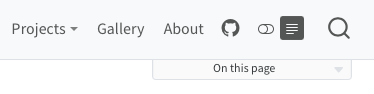

Website Navigation
Overview
There are a variety of options available for providing website navigation, including:
Using top navigation (a navbar) with optional sub-menus.
Using side navigation with a hierarchy of pages.
Combining top and side navigation (where top navigation links to different sections of the site each with their own side navigation).
In addition, you can add full text search to either the top or side navigation interface.
Top Navigation
To add top-navigation to a website, add a navbar entry to the website config in _quarto.yml. For example, the following YAML:
website:
navbar:
background: primary
search: true
left:
- text: "Home"
file: index.qmd
- talks.qmd
- about.qmd Results in a navigation bar that looks something like this:

Above we use the left option to specify items for the left side of the navigation bar. You can also use the right option to specify items for the right side.
The text for navigation bar items will be taken from the underlying target document’s title. Note that in the above example we provide a custom text: "Home" value for index.qmd.
You can also create a navigation bar menu by including a menu (which is a list of items much like left and right). For example:
left:
- text: "More"
menu:
- talks.qmd
- about.qmd Here are all of the options available for top navigation:
| Option | Description |
|---|---|
title |
Navbar title (uses the site: title if none is specified). Use title: false to surpress the display of the title on the navbar. |
logo |
Logo image to be displayed left of the title. |
background |
Background color (“primary”, “secondary”, “success”, “danger”, “warning”, “info”, “light”, “dark”, or hex color) |
foreground |
Foreground color (“primary”, “secondary”, “success”, “danger”, “warning”, “info”, “light”, “dark”, or hex color). The foreground color will be used to color navigation elements, text and links that appear in the navbar. |
search |
Include a search box (true or false) |
left / right |
Lists of navigation items for left and right side of navbar |
pinned |
Always show the navbar (true or false). Defaults to false, and uses headroom.js to automatically show the navbar when the user scrolls up on the page. |
collapse |
Collapse the navbar items into a hamburger menu when the display gets narrow (defaults to true) |
collapse-below |
Responsive breakpoint at which to collapse navbar items to a hamburger menu (“sm”, “md”, “lg”, “xl”, or “xxl”, defaults to “lg”) |
Here are the options available for individual navigation items:
| Option | Description |
|---|---|
href |
Link to file contained with the project or external URL. |
text |
Text to display for navigation item (defaults to the document title if not provided). |
icon |
Name of one of the standard Bootstrap 5 icons (e.g. “github”, “twitter”, “share”, etc.). |
aria-label |
Accessible label for the navigation item. |
menu |
List of navigation items to populate a drop-down menu. |
For more information on controlling the appearance of the navigation bar using HTML themes, see HTML Themes - Navigation.
Side Navigation
If your site consists of more than a handful of documents, you might prefer to use side navigation, which enables you to display an arbitrarily deep hierarchy of articles.
If you are reading this page on a desktop device then you will see the default side navigation display on the left (otherwise you’ll see a title bar at the top which you can click or touch to reveal the navigation).
To add side navigation to a website, add a sidebar entry to the website section of _quarto.yml. For example:
website:
sidebar:
style: "docked"
search: true
contents:
- section: "Basics"
contents:
- index.qmd
- basics-knitr.qmd
- basics-jupyter.qmd
- section: "Layout"
contents:
- layout.qmd
- layout-knitr.qmd
- layout-jupyter.qmdThere are two styles of side navigation available: “docked” which shows the navigation in a sidebar with a distinct background color, and “floating” which places it closer to the main body text. Here’s what the “docked” and “floating” styles look like (respectively):
 |
 |
Here are all of the options available for side navigation:
| Option | Description |
|---|---|
id |
Optional identifier (used only for hybrid navigation, described below). |
title |
Sidebar title (uses the project title if none is specified). |
subtitle |
Optional subtitle |
logo |
Optional logo image |
search |
Include a search box (true or false). Note that if there is already a search box on the top navigation bar it won’t be displayed on the sidebar. |
tools |
List of sidebar tools (e.g. link to github or twitter, etc.). See the next section for details. |
items |
List of navigation items to display (typically top level items will in turn have a list of sub-items). |
style |
“docked” or “floating” |
type |
“dark” or “light” (hint to make sure the text color is the inverse of the background) |
background |
Background color (“none”, “primary”, “secondary”, “success”, “danger”, “warning”, “info”, “light”, “dark”, or “white”). Defaults to “light”. |
foreground |
Foreground color (“primary”, “secondary”, “success”, “danger”, “warning”, “info”, “light”, “dark”, or hex color). The foreground color will be used to color navigation elements, text and links that appear in the sidebar. |
alignment |
Alignment (“left”, “right”, or “center”). |
collapse-level |
Whether to show sidebar navigation collapsed by default. The default is 2, which shows the top and next level fully expanded (but leaves the 3rd and subsequent levels collapsed). |
pinned |
Always show a title bar that expands to show the sidebar at narrower screen widths (true or false). Defaults to false, and uses headroom.js to automatically show the navigation bar when the user scrolls up on the page. |
For more information on controlling the appearance of the side navigation using HTML themes, see HTML Themes - Navigation.
Hybrid Navigation
If you have a website with dozens or even hundreds of pages you will likely want to use top and side navigation together (where the top navigation links to various sections, each with their own side navigation).
To do this, provide a list of sidebar entries and give them each an id, which you then use to reference them from the navbar. For example, if you are using the Diátaxis Framework for documentation, you might have separate sections for tutorials, how-to guides, explanations, and reference documents:

Your site configuration might look something like this:
website:
navbar:
search: true
left:
- text: "Home"
file: index.qmd
- sidebar:tutorials
- sidebar:howto
- sidebar:fundamentals
- sidebar:reference
sidebar:
- id: tutorials
title: "Tutorials"
style: "docked"
background: light
collapse-level: 2
contents:
# navigation items
- id: howto
title: "How-To"
contents:
# navigation items
- id: fundamentals
title: "Fundamentals"
contents: :
# navigation items
- id: reference
title: "Reference"
contents:
# navigation items
Note that the first sidebar definition contains a few options (e.g. style and background). These options are automatically inherited by the other sidebars.
Reader Mode
If you’d like users to be able to hide the side navigation and table of contents and have a more focused reading experience, you can enabled reader-mode. When enabled, a reader-mode toggle will appear on the navbar, if present, or on the sidebar. When pressed, the toggle will ‘roll up’ the sidebar and table of contents.

To enable reader-mode, use the following in your project:
website:
reader-mode: trueSite Search
You can add site search by including search: true in either your site-navbar or site-sidebar configuration. For example:
website:
sidebar:
style: "docked"
search: true
items:
- text: "Basics"
contents:
- index.qmd
- basics-jupyter.md
# etcGitHub Links
You can add various links (e.g. to edit pages, report issues, etc.) to the GitHub repository where your site source code is hosted. To do this, add a repo-url along with one or more actions in repo-actions. For example:
website:
repo-url: https://github.com/quarto-dev/quarto-demo
repo-actions: [edit, issue]The links will be displayed immediately below the page table of contents:

By default, the main branch will be used for generating links. You can specify an alternate branch using the repo-branch option.
Redirects
If you rename or move a page on your site, you may want to create redirects from the old URLs so that existing links don’t break. You can do this by adding aliases from old pages to renamed pages.
For example, let’s say you renamed page.qmd to renamed-page.qmd. You would add the following aliases entry to renamed-page.qmd to create the redirect:
---
title: "Renamed Page"
aliases:
- page.html
---This can also be useful for situations where you re-organize content on your site into a different directory hierarchy or break one large article into smaller ones. For this case, you may want to add the URL hash of the section that you have broken into a new page. For example:
---
title: "Learning More"
aliases:
- overview.html#learning-more
---Depending on where you are deploying your site there may be more powerful tools available for defining redirects based on patterns. For example, Netlify _redirects files or .htaccess files. Search your web host’s documentation for “redirects” to see if any of these tools are available.
404 Pages
When a browser can’t find a requested web page, it displays a 404 error indicating that the file can’t be found. Browser default 404 pages can be pretty stark, so you may want to create a custom page with a more friendly message and perhaps pointers on how users might find what they are looking for.
Most web serving platforms (e.g. Netlify, GitHub Pages, etc.) will use a file named 404.html in the root of your website as a custom error page if you provide it. You can include a custom 404 page in a Quarto website by creating a markdown file named 404.qmd in the root of your project. For example:
---
title: Page Not Found
---
The page you requested cannot be found (perhaps it was moved or renamed).
You may want to try searching to find the page's new location.Note that you can use HTML alongside markdown within your 404.qmd file in order to get exactly the appearance and layout you want.
Your 404 page will appear within the chrome of your site (e.g. fonts, css, layout, navigation, etc.). This is so that users don’t feel that they’ve irrecoverably “left” your site when they get a 404 error. If you don’t want this behavior, then provide a 404.html rather than 404.qmd.
Here are some examples of how various popular websites handle custom 404 pages: https://blog.fluidui.com/top-404-error-page-examples/.
Non-Root Site Paths
If your website is served from the root of a domain (e.g. https://example.com/) then simply providing a 404.qmd file as described above is all that’s required to create a custom 404 page.
However, if your website is not served from the root of a domain then you need to provide one additional bit of configuration to make sure that resources (e.g. your site’s CSS) are resolved correctly within 404 pages.
For example, if your site is served from https://example.com/mysite/ then you’d add the following to your project website configuration within _quarto.yml:
website:
title: "My Site"
site-path: "/mysite/"Note that if you are already providing a site-url (which is required for generation of sitemaps and social metadata preview images) then it’s enough to simply include the path within the site-url:
website:
title: "My Site"
site-url: "https://example.com/mysite/"